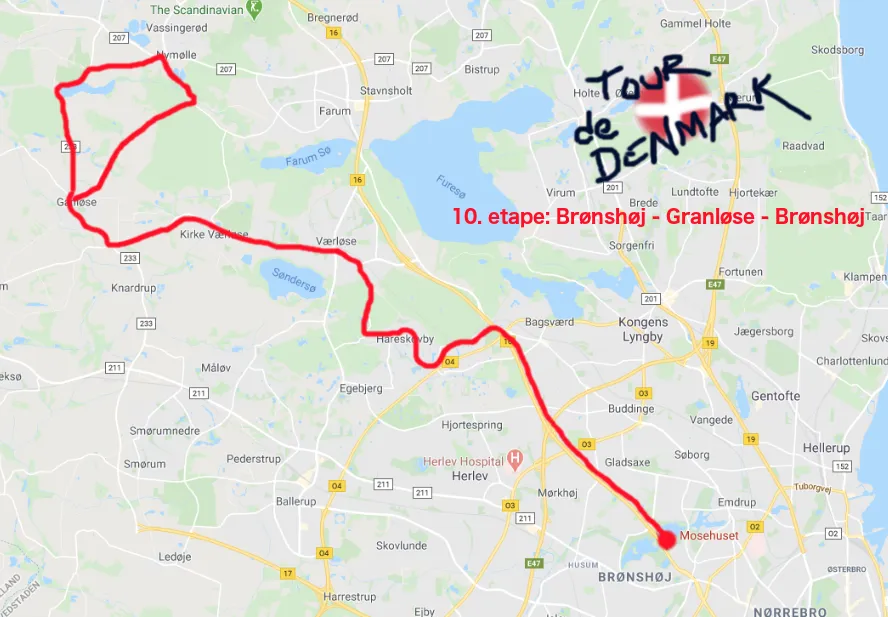

10. etape: Brønshøj-Ganløse-Brønshøj

Den 18. juli afholder DPCC (Danske Professionelle Cyclisters Club) et godt gammeldags dernypaceløb. Squadra Molteni forventer naturligvis at blive inviteret til den slags og derfor bestod dagens etape af 55 km frisk kørsel efter derny. Kaptajn Bjørnsteen havde sat Moltenis to tempospecialister fra Brønshøj på sagen. Klokken 5.00 onsdag morgen stod Jeppe Thiemer og Jens Langergaard klar ved Mosehuset på Hareskovvej.

Ruten går ud langs den naturskønne Farummotorvej, til venstre ved ABs baner og gennem Hareskovby, ned forbi Bryggeri Skovlyst, op til Værløse og så videre ud mod Kirke Værløse og til højre ved Golfklubben og så nord på for at ramme en klassisk rute for de fleste cykelryttere fra Københavnsområdet – “Tyren.”
En let kuperet rute med godt 55 km og 300 højdemeter.

Dernypacer på skift
Dernypacer Kim G. Svendsen var ikke dukket op ved startstregen, så Jeppe og Jens måtte på skift agere derny.
Det gik egentlig fint med at ligge i 52-12 gearingen og agere derny med 53-54 km/t. 10 km før mål mistede jeg dog lidt moment, og måtte sætte farten fast på 49 km/t, fortæller Jens.
Jens klagede godt nok lidt over ømme piber mod slutningen af etapen, men det viste sig at være et par skovflåter, der havde bidt sig fast i hans lægge, da vi kørte igennem Hareskoven. De sugede flere milliliter højoktanhæmatokrit lige ud af ham, afslører Jeppe
Jeppe frygtede lidt, om han ville være i stand til at agere derny med 53-54 km/t, da det kræver en lidt anden sidestilling på cyklen.
Efter jeg har fået rettet min mellemkødsvinkel, er jeg i stand til at holde en fart langt over min egen gennemsnitshastighed, og så er det jo ingen sag at skulle agere derny, fortæller Jeppe
Filmen Forza Molteni – et cykelhold
Efter små 12-14 minutters ridt mødte der rytterne en lille surprise. “Filmoptagelse” proklamerede et vejskilt lige efter Hareskovby.
Og jo, ganske vist. Lidt længere fremme sad Jørgen Leth i vejkanten i sin MasterClass instruktørstol og med håndholdt kamera for øjet, for at få billeder til hans kommende film “Forza Molteni – et cykelhold”
Jeg mødte Jørgen på en strandbar på Borneo for et par år siden, hvor vi delte en kokosnøddepunch og godt kvindeligt selskab. Han fortalte lidenskabeligt om, hvordan han ønskede at lave endnu en cykelfilm der kan stå på samme hylde som “Stjernerne og vandbærerne” og “En forårsdag i helvede”. Så det er en gammel aftale, der udfolder sig nu, det er det altså, siger Jeppe Thiemer.
Sejr, morgenbal og kokosnøddepunch
Jens og Jeppe holder farten hele vejen rundt og vinder dernyetapen i overbevisende stil på 58.22.13 min.
Efter sejren rullede Thiemer og Langergaard tilbage mod de landlige omgivelser omkring Ganløse. Her havde en flok kvindelige fans tiljublet duoen da de susede forbi tidligere og inviteret Squadra Molteni esserne til morgenbal i laden.
Ved redaktionens deadline er der endnu ikke modtaget referat om disse festligheder, men rygtet siger at der også her er kokosnøddepunch…
Forza Jeppe Thiemer og Jens Langergaard
Forza Molteni
10. Brønshøj – Granløse – Brønshøj
1. Jeppe Thiemer, Squadra Molteni
2. Jens Langergaard, Squadra Molteni
Klassement:
1. Jeppe Thiemer, Squadra Molteni
2. Jens Langergaard, Squadra Molteni
3. Niels Bjørnsteen, Squadra Molteni
4. Grane Wunderbein Maaløe, Squadra Molteni
5. Jens Stærk Bojesen, Squadra Molteni
6. Lars Munch Larsen, Squadra Molteni
7. Per Sandahl, Squadra Molteni
8. Kristian Blume, Squadra Molteni
9. Svend Seegert, Squadra Molteni
Hold:
1. Squadra Molteni